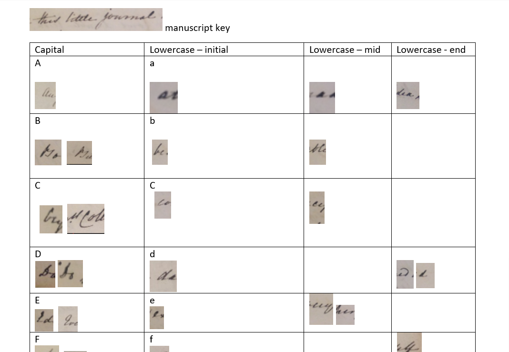

Gaskell's journal is quite clear and legible throughout, although the ink is fading. The fading has made certain portions of the text difficult to read, and has particularly affected Gaskell's outstrokes, punctuation, and the dots on characters that contain them.
Gaskell had a clear, flowing handwritten style with few flourishes. She often included ampersands (&) in her journal, and frequently uses dashes rather than full stops when changing thoughts. She often breaks words across the line; in most cases, she includes an equal sign (=) both after the partial word on the first line, and prior to continuing it on the following line.
While Gaskell's handwriting is remarkably clear, several letters have unique strokes or loops to them. The capital "B" for example, is written with the curves slanting toward the right, until the letter begins to appear almost like a capital "M". Gaskell begins her lowercase "p" with a large upward loop, which at a first glance can make them appear like an "f". In order to assist the transcription, prior to beginning work a Gaskell "alphabet" was created.
The Gaskell alphabet is a table of representative samples of Gaskell's handwriting for each character, drawn from the journal itself, which was used as a tool to assist in transcribing difficult to read words. The alphabet includes representative examples of each letter, when possible as they are used in each of several positions: at the beginning, in the middle of, and at the conclusion of a word. Examples were also provided of Gaskell's use of the ampersand, the equal sign, and numerals.
The Alphabet follows for those who may find it helpful in reading the manuscript pages, or who simply wish to further study Gaskell's handwriting.

Maintained by Melissa J. Klamer (klamerme@msu.edu)
This project is built with
the oXygen XML editor.
Distributed under a Creative Commons
Attribution-NonCommercial-NonDerivs License.